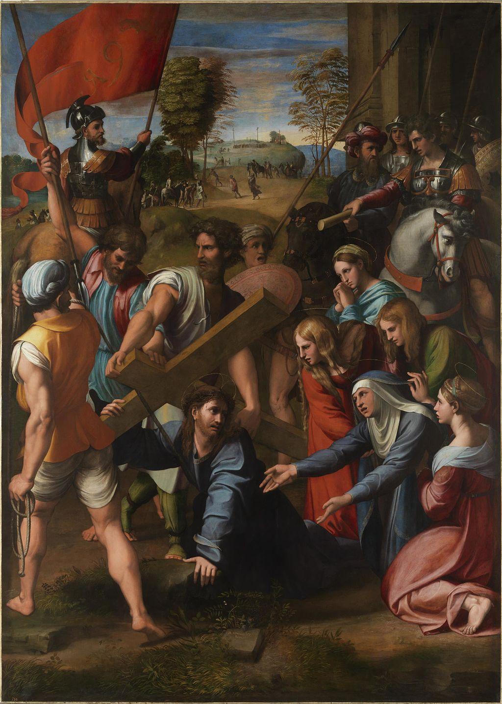

<head>
<meta charset="UTF-8" />
<meta name="keywords" content="drawing, painting" />
<meta name="description" content="drawings by Sunjy" />
<title>Sunjy</title>
<link rel="shortcut icon" type="image/x-icon" href="../../mImages/mCommon/favicon.ico" media="screen" />
<link rel="stylesheet" type="text/css" href="../../mCsses/mCommon/mCssA.css" />
<link rel="stylesheet" type="text/css" href="../../mCsses/mCommon/mCssB.css" />
<link rel="stylesheet" type="text/css" href="../../mCsses/mCommon/mCssC.css" />
<link rel="stylesheet" type="text/css" href="../../mCsses/mCommon/mCssD.css" />
<link rel="stylesheet" type="text/css" href="../../mCsses/mContent/mCssA.css" />
<link rel="stylesheet" type="text/css" href="../../mCsses/mContent/mCssB.css" />
<link rel="stylesheet" type="text/css" href="../../mCsses/mContent/mCssC.css" />
<link rel="stylesheet" type="text/css" href="../../mCsses/mContent/mCssD.css" />
</head>
<script type="text/javascript" src="../../mScripts/mContent/mContentAA.js" /></script>
<script type="text/javascript" src="../../mScripts/mContent/mContentAB.js" /></script>
<script type="text/javascript" src="../../mScripts/mContent/mContentAC.js" /></script>
<script type="text/javascript" src="../../mScripts/mContent/mContentAD.js" /></script>
<script type="text/javascript"></script> 
<script type="text/javascript">
document.write('<div class="mImgAbsolute"></div>');
/*
document.write('<p class="mFontSizeBColor" />From a white paper...</p>');
document.write('<table class="center"><tr><td>');
document.write('');
document.write('</td></tr></table>');
*/
</script>


<script type="text/javascript">
document.write('<p class="mFontSizeBColor" />Christ Falling on the Way to Calvary</p>');
document.write('<p class="mFontSizeSColor" />By Raphael. “Christ Falling on the Way to Calvary” shows Christ carrying the cross to his crucifixion, at the moment when he fell. The foreground of the painting is densely packed with emotional responses, especially his mother’s agony.<br><br>Simon of Cyrene, who is centered above Christ, is lifting Christ’s cross momentarily. The four Marys are depicted on the bottom right side of the painting. Towering on either side of the composition are the Roman guards. This picture was created during the Italian High Renaissance and is part of the Museo del Prado collection in Madrid. This masterpiece is an essential work for the development of Raphael’s style and reputation.<br><br>The story of Christ Carrying the Cross on his way to his crucifixion is in all four Gospels. The story became a common subject in art, especially in the Catholic tradition of the “Stations of the Cross.” The “Stations of the Cross” are a series of images depicting Jesus Christ on the day of his crucifixion, which can be found in most Catholic churches. The Gospel of John states explicitly Jesus carried his cross, and all but John include Simon of Cyrene, who was recruited by the soldiers from the crowd to help carry the cross.<br><br>Only the Gospel of Luke mentions the “women of Jerusalem,” who were in later writings and Christian art assumed to include the Virgin Mary and the Three Marys. The Gospels give the name Mary to several women. At various points of Christian history, some of these women have been conflated with one another.<br><br>The Swoon of the Virgin was an idea developed in the late Middle Ages, in which the Virgin Mary fainted while she watched the process of the Crucifixion of Jesus. The swoon is usually depicted during in scenes of Christ Carrying the Cross. Also, during the Crucifixion of Jesus.  The concept of the “spasm” of the Virgin was fashionable, but also controversial, in early-16th-century Catholicism. In this work, Raphael shows the Virgin has only fallen to her knees, not collapsed or fainted, as is often shown.</p>');
document.write('<table class="center" /><tr><td>');
document.write('<br>Simon of Cyrene, who is centered above Christ, is lifting Christ’s cross momentarily. The four Marys are depicted on the bottom right side of the painting. Towering on either side of the composition are the Roman guards. This picture was created during the Italian High Renaissance and is part of the Museo del Prado collection in Madrid. This masterpiece is an essential work for the development of Raphael’s style and reputation.<br><br>The story of Christ Carrying the Cross on his way to his crucifixion is in all four Gospels. The story became a common subject in art, especially in the Catholic tradition of the “Stations of the Cross.” The “Stations of the Cross” are a series of images depicting Jesus Christ on the day of his crucifixion, which can be found in most Catholic churches. The Gospel of John states explicitly Jesus carried his cross, and all but John include Simon of Cyrene, who was recruited by the soldiers from the crowd to help carry the cross.<br><br>Only the Gospel of Luke mentions the “women of Jerusalem,” who were in later writings and Christian art assumed to include the Virgin Mary and the Three Marys. The Gospels give the name Mary to several women. At various points of Christian history, some of these women have been conflated with one another.<br><br>The Swoon of the Virgin was an idea developed in the late Middle Ages, in which the Virgin Mary fainted while she watched the process of the Crucifixion of Jesus. The swoon is usually depicted during in scenes of Christ Carrying the Cross. Also, during the Crucifixion of Jesus.  The concept of the “spasm” of the Virgin was fashionable, but also controversial, in early-16th-century Catholicism. In this work, Raphael shows the Virgin has only fallen to her knees, not collapsed or fainted, as is often shown." />');
document.write('</td></tr></table>');
</script>


